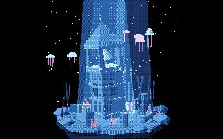
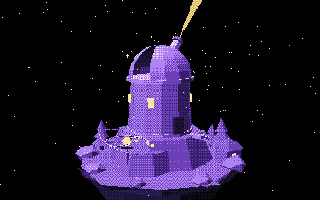
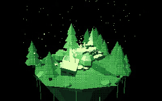
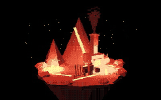
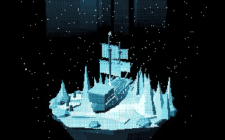
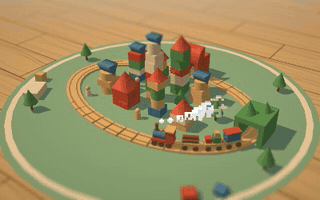
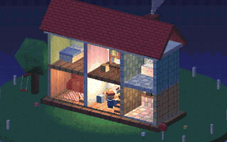
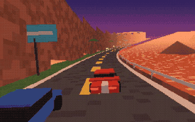

いろいろなゲームのジャンルに、新しい見た目（ルック）を当ててみた小さな試作集です。どれもブラウザで動き、操作はなく、自動で動く場面を見るだけです。





黒い空間に浮かぶ小さなジオラマを、立体のままドット絵として描いたもの。1 場面は 1 つの色相と差し色 1 つだけで、ゆっくり回ります。



第 1 集から選んだ 20 案の傾向で作りこんだもの。奥行きと光のある場面、ローポリ、ドット絵、カメラごしの映像、小さな模型。
FPS、RPG、パズル、レースなどに、印刷・画材・古い画面・手芸・模型といった見立てを 1 つずつ当てたもの。金色のますが、お気に入りに選んだ 20 案です。